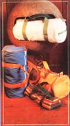
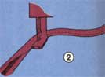
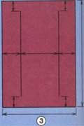
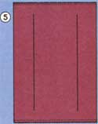
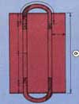
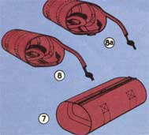
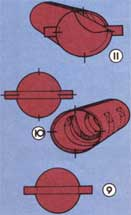
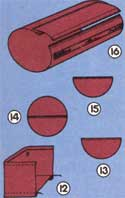

For a 19-1/2" x 8-1/2" duffel bag, gather together one yard of 40"-wide fabric (canvas, cotton duck, coated nylon, Acrilan or just about anything that's durable and won't stretch or shrink too much), one-quarter yard of 40"-wide cloth (perhaps of a different color) for welting cover, two yards of 1/16"-diameter welting cord or rope, three yards of 1-1/2" webbing for straps, one 21"-long strip of zipper (bought off the roll) with slider, and one roll of cotton-covered polyester (or other heavy-duty) thread.
(A word of caution: Some of the following "trimmings" must be attached to a bag before it's completed. You can save yourself some frustration, then, by reading all the directions in this article before you sew that first stitch.)
FOR POCKETS: You'll need all of the above materials plus one foot of elastic or shock cord, one-half yard of extra fabric (the same as the bag material), and two 9" lengths of zipper (with sliders).
FOR A SHOULDER STRAP: Add on 1-1/4 yards of the same 1-1/2" webbing strap material called for above (if you want end straps, too, make that 2-1/4 yards more), plus a buckle that will fit the webbing, two clip or spring hook fasteners, and two D-rings.
FOR A STORM FLAP: Buy an extra 7-1/2" x 22" piece of fabric and 22" of Velcro.
Welt cord and zippers can be purchased "off the roll" at upholstery shops. Marine, camping, hardware and fabric outlets are good sources of webbing, D-rings, fasteners, shock cord and Velcro.
Welting, the "trim" around the ends of the bags you see here, is just a length of small rope or cord that has been covered with fabric. It both helps the bag retain its shape and adds a pleasingly decorative touch, but welting is not absolutely essential and can be left off altogether if you want to simplify your project.
If you are going to use welting, though, it's best to make it up before you start a sack. Take your one-quarter yard of 40"-wide welting-cover cloth and cut it into strips, each 1-1/4" wide (see Fig. 1). Seam several of the strips together to make one long strip. Then fold the ribbon of material over the welting cord (tie a knot in the rope so it won't slip out), and sew the fabric closed as shown in Fig. 2. It's not necessary to sew too close to the rope as you make your stitch, but you should try to form the whole length of welting as smoothly and as evenly as possible. And make just a little more than you think you'll need!
(NOTE: All the welting and zipper work called for in this article will be a lot easier to do if your sewing machine is equipped with a half foot attachment. You can do the job with a standard full foot, of course, but it'll take extra time and effort.)
Cut a 21" x 30" rectangle from your main piece of fabric. Then, with a light pencil or chalk, mark two parallel lines on the cloth as shown in Fig. 3.
Separate your long (21") zipper and sew one half to each of the "short" ends of the piece of material, with the fastener's teeth pointed in (see Fig. 4). Then turn the two zipper halves over and stitch 'em down again with the teeth pointed outward (Fig. 5).
The handles of the bag's webbed carrying strap should be reinforced with a second layer of webbing before the strap is sewed to the bag. Cut a 74"-long section from your 108" (three yard) length of webbing and then cut the remaining 34" of webbing into two 17"-long pieces. Measure back 11" from each end of the 74"-long carrying strap and, starting from that point on both ends, attach the two 17" lengths of reinforcement to the strap by laying the strap on each section of reinforcement and then sewing down both sides of the "sandwich."
Next, place the reinforced strap on the 21" x 30" rectangle of bag material as shown in Fig. 6. Make sure the webbing starts at Point A (15" in from both zippered edges of the fabric), ends at Point F (where its slightly turned-under end is allowed to slightly overlap the beginning end), and just touches the inside of the two chalk (or pencil) marks that you've lightly scribed on the material. Temporarily pin the strapping into place.
Then, beginning at Point A, sew along the outside edge of the webbing until you get to Point B, where you'll make a box stitch that overlaps the reinforced section of the strap by one inch. Sew back and forth over this box stitch a couple of times for strength, and then back along the inside of the strap all the way to Point E (don't forget, as you pass "F", to fold its end under and allow it to overlap Point A enough to make a good seam). Sew a box stitch at Point E (just like the one you sewed at "B"). Then sew down the outside of the strap to "F", run your needle back and forth over the "F/A" seam a couple of times, and take the bag out of the machine.
Next, make a box stitch at "C" (again, just like the box stitch you sewed at "B" and "E"). Then sew down the outside of that part of the strap to "D", make another reinforced box stitch, sew back down the inside of the webbing to "C", reinforce that box stitch by sewing over it again, and take the bag out of the machine. Hey! This project is starting to look like something!
Now turn the bag inside-out and zip it closed as shown in Fig. 7. Pull the slider all the way off, then pry a few teeth open on one edge of the "barrel" you've created, start the slider, turned so its pull tab is on the inside, back on again, and pull it to the middle of the zipper.
(You'll find it easier to sew the bag's ends onto this completely closed "drum" and, once that job is done, you can open the zipper "above" the slider and use the closure normally.)
You're now ready to put the welting on your bag (if you've decided to leave the trim off, you can skip this step and go directly to Step 6). Note that the doubled fabric which holds the welting cord is lined up with and sewn to the very edge of the material which forms the body of the duffel sack. The enclosed cord itself faces "in" and the welting is attached to the inside surface (the "good" side) of the inside-out "barrel" of material (see Fig. 8 ).
Leave about an inch of the welting free as you begin to stitch the reinforcing trim to the "drum" of material on one side of the zipper. Then sew right across the end of the closure and on around the "barrel." When you've completed the circle, cut the welting off about an inch longer than necessary, open the stitching in the trim's fabric, cover (to expose the cord inside), cut the cord off even with its starting end, turn under the tall edges of the welting's fabric cover, and sew the covering down so that it overlaps the trim's beginning end. Repeat the procedure on the other end of the "drum."
(NOTE: If you'd like to put extra carrying loops on both ends of your bag, just cut off two 5"-long pieces of webbed strapping. Then double the tabs as shown in Fig. 8a and sew them under the welting as you such it in place so that the tabs cover the ends of the zipper.)
The ends of the bag are two circles of fabric, each measuring 9-1/2" in diameter. And, yes, you can attach carrying handles to them too: Just cut two pieces of strapping, each 15"-long, and fasten one right across the middle of each circle as shown in Fig. 9 (let both straps have a little slack in their centers so you'll be able to get your fingers under them when the bag is stuffed full).
Now mark each disc of cloth into quarters (north, east, south and west, with the straps running from east to west) and, using its zipper as "north," divide the barrel of the bag into matching quadrants as illustrated by Fig. 10.
Turn the circles of cloth with their strap sides "in" and, starting at one of the "east" or "west" marks, match the quadrants of one of the bag's ends to the corresponding sections of its main body and sew the two together as indicated by Fig. 11. (Sew this row (or rows) of stitching as close to the welting as possible.) It's OK to tug a little (by holding the fabric taut in back and pulling a bit in front of the needle as you go) to make the marks line up as you sew the ends to the bag, but only a little: Too much tugging will throw unwanted warps and wrinkles into the finished ends.
As soon as both circles are securely stitched into place, turn the duffel bag right-side out. It's finished!
INSIDE POCKETS:
If you like, you can fashion two inside pockets for your sack from a pair of 6" squares of cloth and two 7" x 18" fabric rectangles.
First, run a 3/4" hem along one long side of each of the larger pieces of material. Then, beginning at a corner, sew the other long side of the rectangle right around three sides of one of the squares (Fig. 12). Pull 6 inches of shock cord or elastic through the 18" hem and stitch its ends to hold it in place. Repeat with the second pocket. Then turn the bag inside out again and sew one of the pockets into each end of the sack (by starting at one side-center mark on the bag's end and stitching right down around the bottom and up again to the opposite center mark).
OUTSIDE POCKETS:
These are attached before the ends are sewed onto the bag. Cut out an extra 9-1/2" disc of fabric, cut the circle in half, and make a 1/4" hem along the straight cut (Fig. 13). Then separate a zipper (which is as long as the diameter of the circle) and sew one half across the middle of one of the full bag-ends with its teeth pointing up (Fig. 14) and the other half across the top of the half circle, also "teeth up" (Fig. 15). Zip the halves of the closure together, then rezip (as described in SACK STITCHING, STEP FOUR) so that both ends of the fastener are closed and the slider is in the middle. Stitch around the circumference of the pocket to hold it in place and then sew the modified bag-end onto the sack so that, when the duffel bag is turned right-side out, the pocket will be on the outside.
STORM FLAP:
This protective cover for the bag's main zipper is attached before the handle strap is added to the carryall. Turn and hem all four edges of a 7-1/2" x 22" rectangle of fabric (which will leave you with a rectangle that's just slightly shorter end-to-end than your bag's main zipper). Sew the "pile" side of your Velcro fastener to the underside of one of the rectangle's long edges and then stitch the fabric's opposite long edge to the bag (so the strip of material covers the zipper and extends far enough across the sliding closure for its Velcro pile to engage the second half of the Velcro fastener on the other side. Then align the Velcro's halves and sew its "hook" section to the bag (Fig. 16).
ADJUSTABLE SHOULDER STRAP: If you add this accessory, and you, should, it's almost indispensable, its D-rings or drapery hooks should be slipped onto the doubled carrying-strap tabs before those tabs are sewed to the bag (see SACK STITCHING, STEP FIVE).
Then, after the duffel bag is completed, take a yard-long section of webbed strapping, sew a buckle onto one end (Fig. 17), slide a hook fastener (Fig. 18) onto the strap's free end, pull the strap through the buckle (Fig. 19), and sew on a second fastener so that you wind up with a strap like the one you see in Fig. 20. Snap the fasteners into the D-rings mounted on the bag and adjust the strap's length with the sliding buckle.
Now that you've been all the way through the basic bag you can, of course, tailor the pattern to your needs, wants and desires. Make it bigger. Make it smaller. Put more or fewer carrying straps on it, and make those straps longer or shorter. Add pockets. Take pockets off. Make the bag's ends triangular or rectangular instead of round. Put on fancier welting, or forget the welting altogether. Invent! And enjoy!
You can equip your duffel bags with ordinary (already cut to length and clipped together at one end) zippers, of course, but they're not as easy to work with as the "off the roll" closures specified in this article.
In the case of the main zipper which closes the bag shown here, for instance, you would have to modify the attachment procedure as follows:
SACK STITCHING, STEP TWO: Keep the finished zipper closed while you sew one of its sides to one of the 21" edges of the fabric rectangle.
SACK STITCHING, STEP THREE: Allow the fastener to remain closed as you attach the bag's main carrying strap to the rectangle of fabric.
SACK STITCHING, STEP FOUR: Then, before turning the bag inside out, open the zipper all the way down and sew its other side to the opposite 21" edge of material.
A FURTHER NOTE: Be extra cautious when stitching the ends onto the duffel bag if you've used a "ready-made" zipper. If you accidentally sew over either the closure's teeth or the slider, your zipper may jam.
|
 |
|
 |
|
 |
 |
|
|
 |
 |
 |
|
 |
|
|